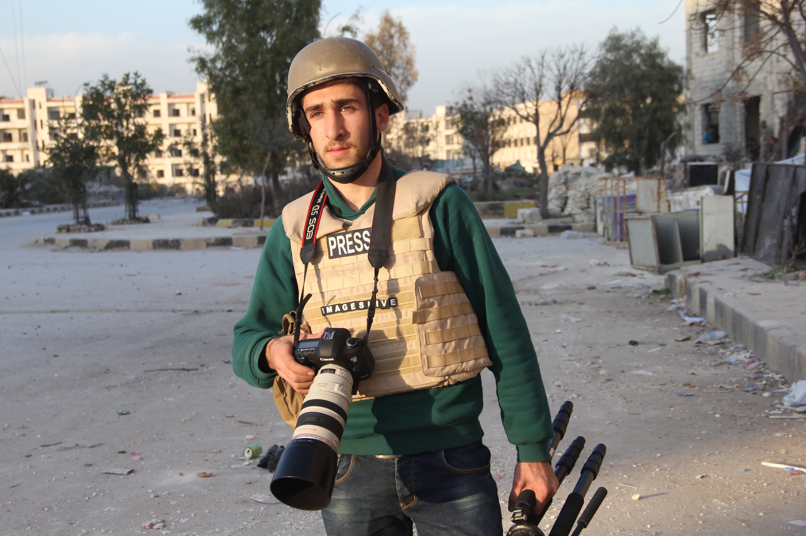
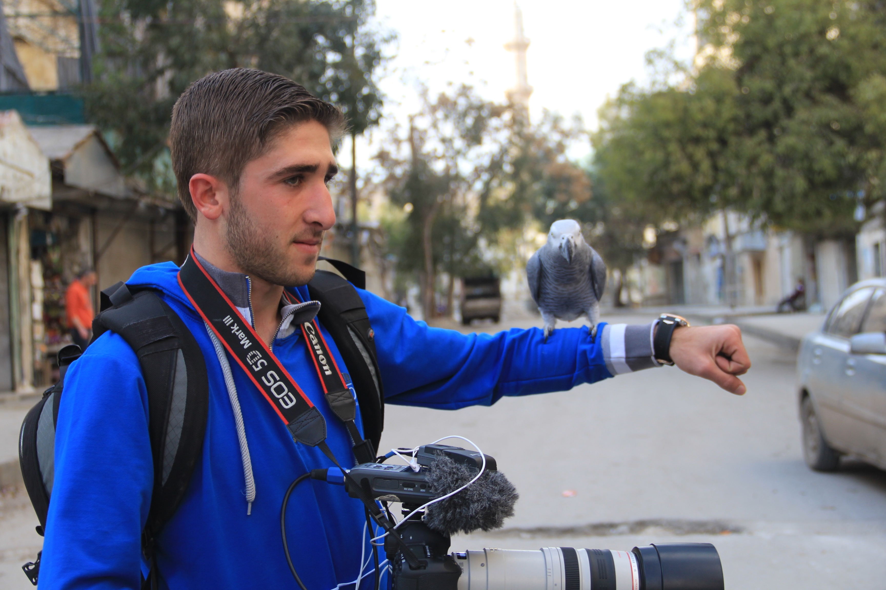

أدانت إيرينا بوكوفا، المديرة العامة لمنظمة اليونسكو، مقتل الصحفي أسامة جمعة في مدينة حلب يوم الخامس من حزيران/يونيه الجاري، بحسب بيان صحفي صدر اليوم عن المنظمة. وأضافت المديرة العامة في البيان الصحفي، "أدين مقتل أسامة جمعة. وأدعو جميع أطراف النزاع إلى احترام اتفاقيات جنيف فيما يتعلق بالوضع المدني للصحفيين وحقهم في ممارسة مهنتهم". ووفقا للبيان الصحفي، فقد قتل أسامة جمعة جرّاء إطلاق النار على سيارة الإسعاف التي كان يتلقى بداخلها العلاج اللازم من الإصابات التي لحقت به أثناء تغطيته لأحداث قصف حي سكني في مدينة حلب. يذكر أن أسامة جمعة كان يعمل لصالح وكالة التصوير البريطانية "إيميجيز لايف".

تلقت مراسلون بلا حدود ببالغ الأسى والحزن نبأ مقتل مصور صحفي سوري شاب يوم الأحد 5 يونيو\\حزيران أثناء تغطية القصف الذي استهدف مدينة حلب في شمال سوريا. وبهذه المناسبة، تدين مراسلون بلا حدود أحداث العنف التي يشهدها الصراع السوري وعدم قدرة الصحفيين على ممارسة مهنتهم. أصيب أسامة جمعة، البالغ من العمر 19 عاماً، أثناء تغطيته للقصف الذي استهدف حي المشد في حلب، حيث نُقل المصور الصحفي الشاب العامل لحساب الوكالة البريطانية إيمدجز لايف على متن سيارة إسعاف تعرضت بدورها لقذيفة مما أدى إلى مقتل السائق والإعلامي السوري. وفي هذا الصدد، قالت ألكسندرا الخازن، مديرة مكتب الشرق الأوسط في المنظمة، إننا ندين بشدة القصف الذي يشنه جيش النظام السوري ضد المدنيين، بمن فيهم الصحفيين الذين يغطون النزاع، مُذكرة في الوقت ذاته أنه بموجب القرار 2222 الصادر عن مجلس الأمن التابع للأمم المتحدة في عام 2015 واتفاقيات جنيف، فإن جميع أطراف النزاع ملزمة بالحرص على ضمان سلامة الصحفيين. تم تدريب أسامة جمعة في الإعلام الحربي من قبل وكالة إنترناشيونال فوتو ميديا, التي تُعد من بين فروعها إيمدجز لايف. وأصدرت إنترناشيونال فوتوميديا بياناً أشادت به بما كان يتميز به أسامة جمعة من حياد واستقلالية في عمل الصحفي، موضحاً أنه كان يوجد في حي الزبدية الذي تعرض لهجوم عسكري خلال تغطيته لمحاولات إغاثة المدنيين تحت قصف مدفعي كثيف من الجيش السوري. يُذكر أن سوريا تُعد من البلدان الأكثر فتكاً بحياة الصحفيين في العالم. فبحسب أرقام منظمة مراسلون بلا حدود، قُتل نحو 200 من الإعلاميين - بين صحفي ومواطن صحفي - منذ اندلاع الصراع في مارس\\آذار 2011، بما في ذلك 4 حالات في عام 2016. وجدير بالذكر أن منظمة مراسلون بلا حدود كانت قد ناشدت مجلس الأمن الدولي العام الماضي، مُطالبة باللجوء إلى المحكمة الجنائية الدولية بشأن جرائم الحرب المرتكبة ضد الصحفيين في سوريا والعراق. هذا وتقبع سوريا في المرتبة 177 (من أصل 180 دولة) على جدول التصنيف العالمي لحرية الصحافة لعام 2016، الذي نشرته مراسلون بلا حدود في وقت سابق هذا العام.